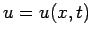
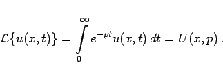
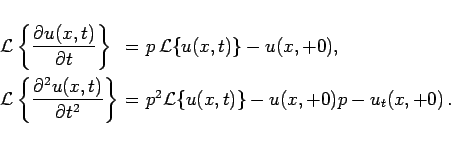
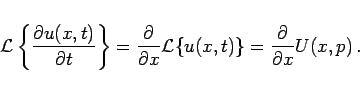

Inhalt Index DeskTop Bronstein

 Integraltransformationen Laplace-Transformation Lösung von Differentialgleichungen mit Hilfe der Laplace-Transformation Partielle Differentialgleichungen
Integraltransformationen Laplace-Transformation Lösung von Differentialgleichungen mit Hilfe der Laplace-Transformation Partielle Differentialgleichungen


Die Lösung einer partiellen Differentialgleichung ist eine Funktion mindestens zweier Variabler: . Da die LAPLACE-Transformation eine Integration bezüglich einer Variablen darstellt, ist die andere Variable bei der Transformation als konstant zu betrachten:
|  | (15.56) |
Auch bei der Transformation von Ableitungen bleibt x fest:
|  | (15.57) |
Für die Ableitungen nach x ist vorauszusetzen, daß sie mit dem LAPLACE-Integral vertauschbar sind:
|  | (15.58) |
Damit erhält man im Unterbereich eine gewöhnliche Differentialgleichung. Außerdem sind die Rand- und Anfangsbedingungen in den Bildbereich zu transformieren.